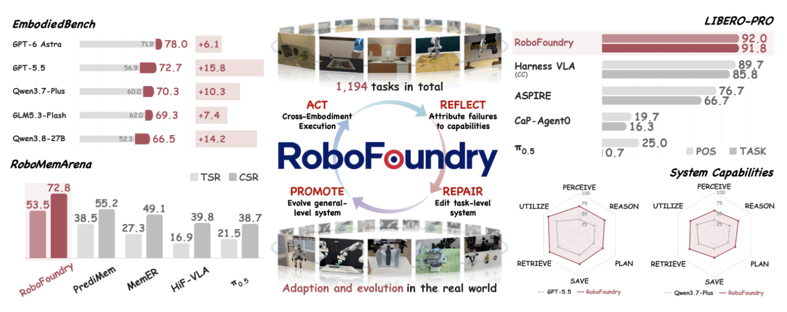
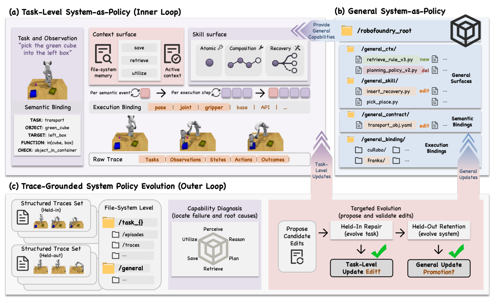

RoboFoundry 深度调研笔记
速览
| 项 | 内容 |
|---|---|
| 一句话 | 把支撑模型完成任务的整套系统当策略来进化：系统以文件目录存在（cat/grep 查看，add/modify/delete 修改），内外双循环"执行—反思—修复—晋升"；EmbodiedBench 上 GPT-5.5 +27.8%、Qwen3.7-Plus 逼近 GPT-5.5（70.3% vs 72.7%）；RoboMemArena +39.0%；LIBERO-PRO 比 CaP-Agent0 +243.8~679.7% |
| 冻结 | 基座模型参数（GPT-5.5 / Qwen3.7-Plus / 冻结 VLA 如 π₀.₅ 后端） |
| 演化 | 两个进化面：上下文面（活跃上下文 + 文件系统记忆：SAVE/RETRIEVE/UTILIZE）+ 技能面（原子技能→组合流程→失败恢复树） |
| 迁移 | 共享语义接口隔离"本体无关决策"与"本体特定执行"——换执行适配层即可跨机器人复用 |

① 动机：优化零件 ≠ 优化系统
- 现有方法各改各的零件（memory、context、skills、action 接口），没人把支撑系统本身当统一策略；
- 且"交互"本身不产生自改进——执行经验必须被转换成持久、经验证的系统变更才有意义。
② 架构：两层系统 + 双循环 + 语义接口

- 系统即文件：任务级系统服务当前任务；通用系统跨任务、跨本体持续保留。
- 内循环：执行任务、记录轨迹；外循环：按轨迹提出修改 → 后续执行检验 → 只有能修复当前失败的修改才正式提交。
- 两个进化面：
1. 上下文面：SAVE / RETRIEVE / UTILIZE 三类操作决定记什么、取什么、怎么用；
2. 技能面：原子技能 → "移动—抓取—放置"组合流程 → 失败条件化恢复树（失败时从仍有效的状态重规划）。
- 共享语义接口：语义层只处理跨本体共享的任务逻辑；执行层适配具体机器人（后端可为冻结 VLA、coding agent 生成的函数、CuRobo 视运动接口）。
③ 机制：六维归因 + 验证式提交
失败/低效先归因到六大能力维度——感知/推理/规划（决策能力）+ 保存/检索/利用（记忆管理）；只在对应进化面上提出修改，且必须验证有效才提交；复现出现的改进晋升到通用系统。
④ 数据与结果
| 基准 | 结果 |
|---|---|
| EmbodiedBench | SOTA：GPT-5.5 +27.8%；Qwen3.7-Plus 70.3% ≈ GPT-5.5 72.7%（系统进化抹平模型差距） |
| RoboMemArena（长程记忆） | 超所有基线（含外部大模型辅助方法）至少 +39.0% |
| LIBERO-PRO（扰动） | 比 CaP-Agent0 +243.8%~679.7%（全扰动类型） |
| 真机 | 跨机器人、跨任务零样本迁移 + 部署后在线进化 |
④A 主结果对比（论文 Table 1 RoboMemArena + LIBERO-PRO，tex 已验）
RoboMemArena（长程记忆，SR / PS）
| 方法 | Overall | Transfer | Occlusion | Counting | Sequence |
|---|---|---|---|---|---|
| RoboFoundry | 53.5 / 72.8 | 70.5/78.1 | 38.3/57.6 | 55.2/82.5 | 75.2/92.1 |
| PrediMem | 38.5 / 55.2 | 22.5/45.2 | 27.3/38.4 | 45.7/69.3 | 72.5/89.5 |
| MemER | 27.3 / 49.1 | 20.0/36.1 | 16.4/33.2 | 27.1/65.1 | 65.0/79.1 |
| π0.5 | 21.5 / 38.7 | 20.0/42.8 | 12.7/17.2 | 14.3/50.9 | 60.0/71.6 |
| MemoryVLA | 15.0 / 35.3 | 15.0/37.2 | 7.3/13.1 | 14.3/55.1 | 37.5/65.2 |
LIBERO-PRO（task-wise 表）：RoboFoundry 各套件 95–100%，而 OpenVLA/π0 大多 0.0、π0.5/CaP-Agent0 在任务改向下大量归零。
④B 核心消融（诚实标注）
论文无逐组件关闭的独立消融大表（设计选择以图表呈现）；核心对照是 System-as-Policy 整体 vs 记忆/双系统基线（上表 +26.2pp over 最强记忆基线 PrediMem）。
⑤ 信息流
内循环：任务执行 → 轨迹 → 六维归因 外循环：对应进化面提修改（上下文面 / 技能面） → 后续执行验证 → 有效才提交 → 复现者晋升通用系统（文件目录） 语义接口（本体无关）→ 执行适配层（本体相关：VLA / 代码 / CuRobo）
⑥ 例子
"收拾桌面"任务失败于"忘记抽屉里有遗留物"→ 归因为检索能力缺陷 → 上下文面新增规则"进入新区域先 RETRIEVE 该区域的历史记录"→ 下次执行验证有效 → 提交进通用系统 → 换一台机器人只需换执行适配层。
⑦ 局限
- 系统文件的增长需要治理（文章强调验证式提交，但长期膨胀待考）；
- 语义-执行分离的适配层仍需人工/agent 编写；
- 归因六维的划分是否完备待检验。
⑧ 簇内定位
- 与 RoboHarn-Evo：同月同主题（经验→持久改进），RoboFoundry 面大（整个系统文件）、RoboHarn-Evo 面深（知识判据分层检验）；
- 与 Zetta：Zetta 演化 {Critic,Recovery,Tools} 且有代码化 critic 高频在线监控，RoboFoundry 演化文件系统且偏离线外循环；
- 与 HarnessBank：共同的"验证式提交"纪律；RoboFoundry 把它从通用 agent 搬进具身并加上跨本体语义接口；
- 名字即宣言：System-as-Policy——进化的单位是系统，不是权重。